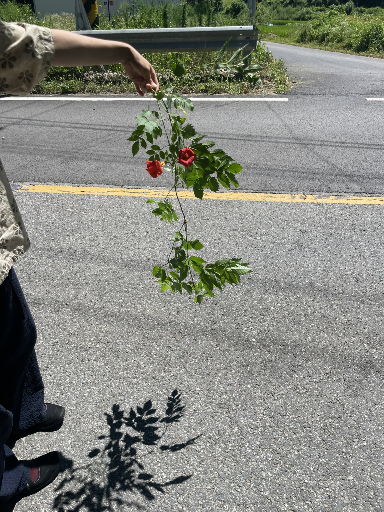
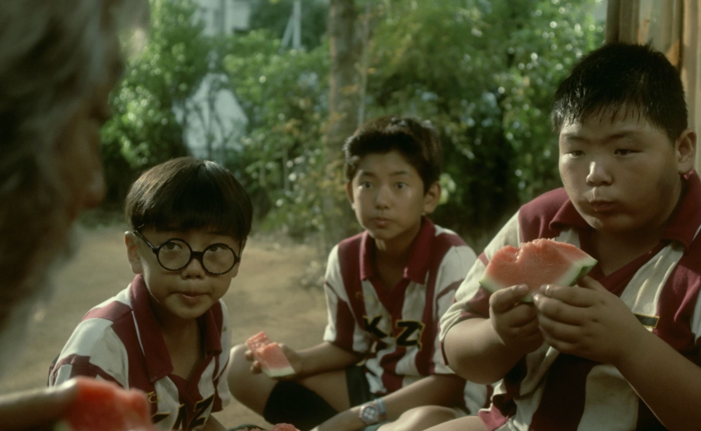
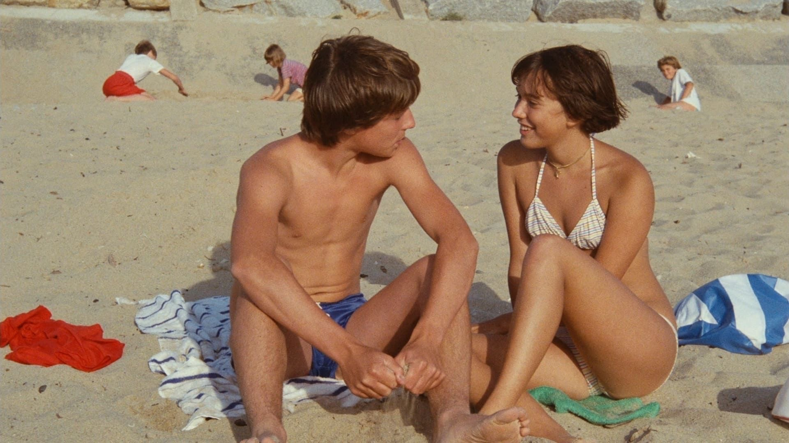
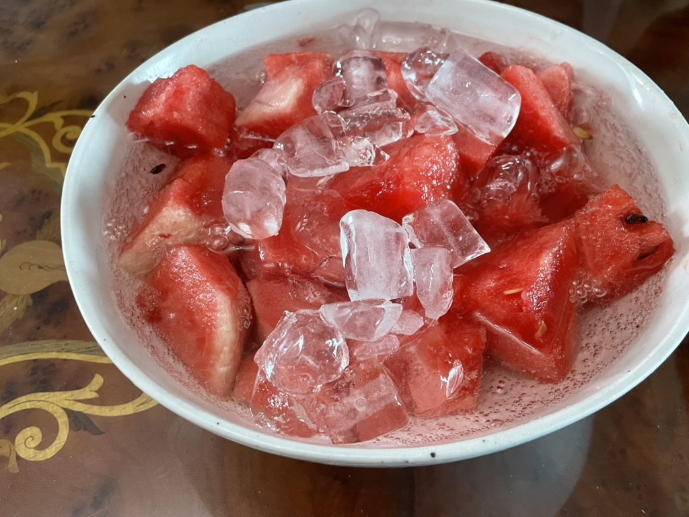

제철
시골에 내려가 나무를 심기로 했어요.
오랫동안 버드나무를 좋아해서 아무래도 난 버드나무를 심어야겠다, 하고 기대했어요.
말하니 아빠는 버드나무는 집에 심으면 안 좋은 일이 생긴다는 걸 듣고는 안 된다고 해요.
고등학교 때 산에 있는 친구 집에서 자고 일어났어요.
친구 할머니는 집에 있는 모과나무에서 딴 모과를 하나는 그대로, 하나는 차를 끓여 먹으라고 썰어서 손에 쥐어주셨어요.
나는 모과나무가 심고 싶었어요. 다시 기대했어요.
폭염이 왔어요.
폭염에는 나무를 심으면 나무 뿌리가 새로운 환경에 적응을 못하고, 수분 스트레스가 심해 생존율이 떨어진대요.
지금이 아니면 나는 언제 또 심을 수 있을지 모르겠는데, 억지로라도 심고 싶었지만, 제 철이 있는 거니까.
제철
: 알맞은 때.
제, 철이 있다는 것.
7월은 능소화가 핀 풍경이 제철이에요.
능소화가 피면 7월이지, 하고 다시 알아요.
아빠는 능소화를 키우고 싶다며, 길가에서 한 줄기를 꺾었어요.

줄기의 마디에 공중뿌리가 나서 줄기를 그대로 심기만 해도 자라난대요.
기대를 품고 집에 도착하니 능소화는 그새 이미 말라버렸어요.
능소화 납치 질식 사건..
여름에는 여름 음악을 듣고 여름 영화**를 봐야 해요.
아니 조금 더 정확히 말하자면,
여름 음악과 여름 영화는 여름에 즐겨야 해요.
아니면, 샘이 나거든요. 여름이.


매미는 그 때를 어떻게 알까요.
짝짓기만을 바라며 자지러지게 울다가 일주일 만에 죽는데. 수년의 지하 생활을 마치고, 그 땅위로 나올 때를.
그 때를, 그 알맞을 때를.
사과할 용서할 대답할 때를 자주 놓쳐요.
걸어도 걸어도* 꼭 한 발씩 늦고 어긋나요.
알맞은 때가 언제인지 알고 싶어요.
여름에 먹는 수박이 가장 맛있는 걸 아는 것처럼.
